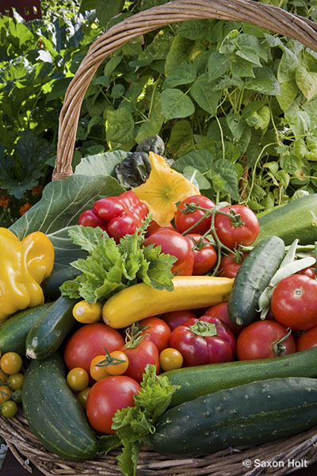
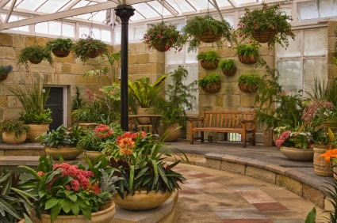

Start small:Enthusiasm for gardening is great,but can rapidly dry up when the work mounts.
Make a detailed landscaping plan and dig a flower bed:Choose a proper site because how much sun an area gets is a prime consideration.
Choose a site with good soil.
Start digging:Remove all pieces os grass or weeds,completely dig up the bed atleast 8 inches deep.
Level the bed:Add 1 or more inches of compost or manure,add lime if soil is too acid.
Buy plants or seeds:Plant them according to their directions,most plants are planted at the same depth.
Water thoroughly:Like a good waiter,a good gardener will check how much water is needed which deepends upon needs of plant,climate,rain.
Cut spent blooms periodically.
Vegetable gardening Tips
Garden vegetables that become over-ripe are an easy targets for some pests.Remove them as soon as possible.
If its getting cold and you have tomatoes still ripening on the wine-Save your Tomatoes! Pull the plants up and bring them inside to a warm dry place.Hang them up,and the tomatoes will ripen on the vine.
Over watering is worse than under watering.It is easier to revive a dry plant than try to dry out drowned roots.
When planting a vegetable transplant,deposit a handfull of compost into each hole.This will provide extra boost.
Insects can't stand plants such as garlic,onions,chives and chrysanthemums.Grow these plants around the garden to repel insects.
Some vegetables actually become better after a first frost,including cabbage,carrots,brussels sprouts.
A simple 5% increase in the organic material(compost)quadruples the soil's ability to store water.
Plants will do best if they are well suited to your growing area.Take some time to read up and choose plants accordingly.


Tips for Indoor gardening
Position Plants Carefully:Look for the best place in your house for each plant.
Re-create a forest floor:If a room seems too dark to sustain a healthy plant,don't be fooled.Most indoor plants originate in tropical and subtropical regions and they thrive in dim environment and filtered light.
Sun-Lovers face north:If you have a plant that thrives on lots of sun,place it on a windowsill facing north or north-east.Check for soil moisture regularly.
Plants for the bathroom:Ferns and other moisture-loving plants do best in vaporous rooms like bathrooms.
Water from the bottom:Water poured directly into the soil may flood,or not reach the pot plant's roots.Instead,water the plants bottom up by standing them in a dish and filling the dish with water.
Do not over water:Water your plants only when the potting mix feels dry to the touch-over watering is often the cause of indoor plant death.